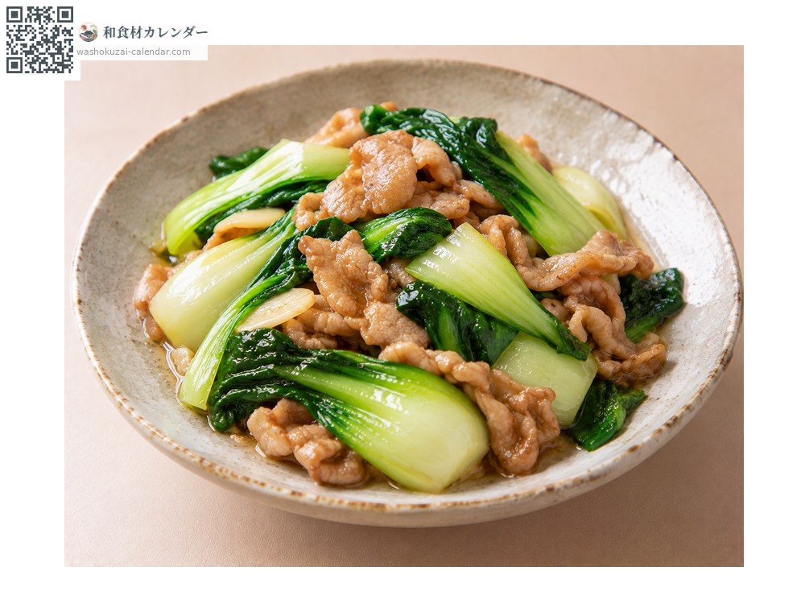
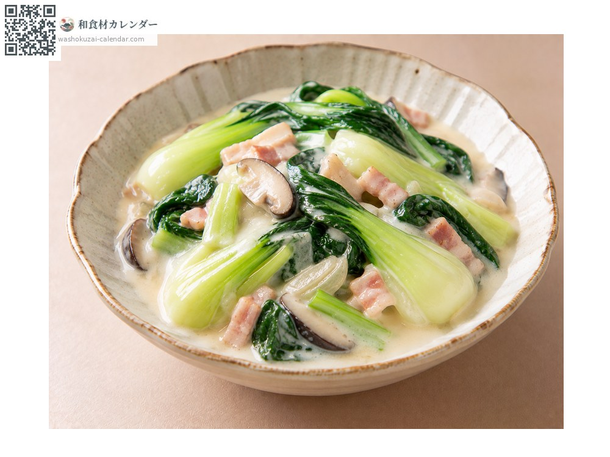
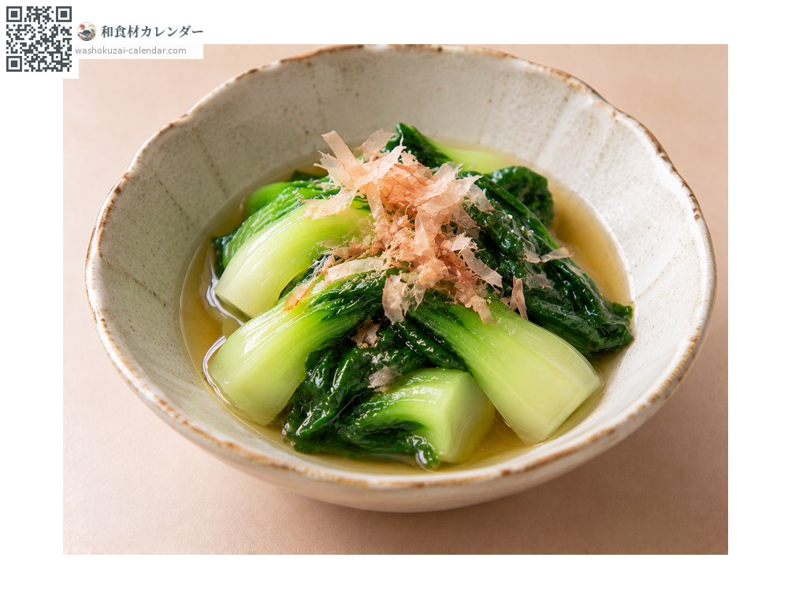
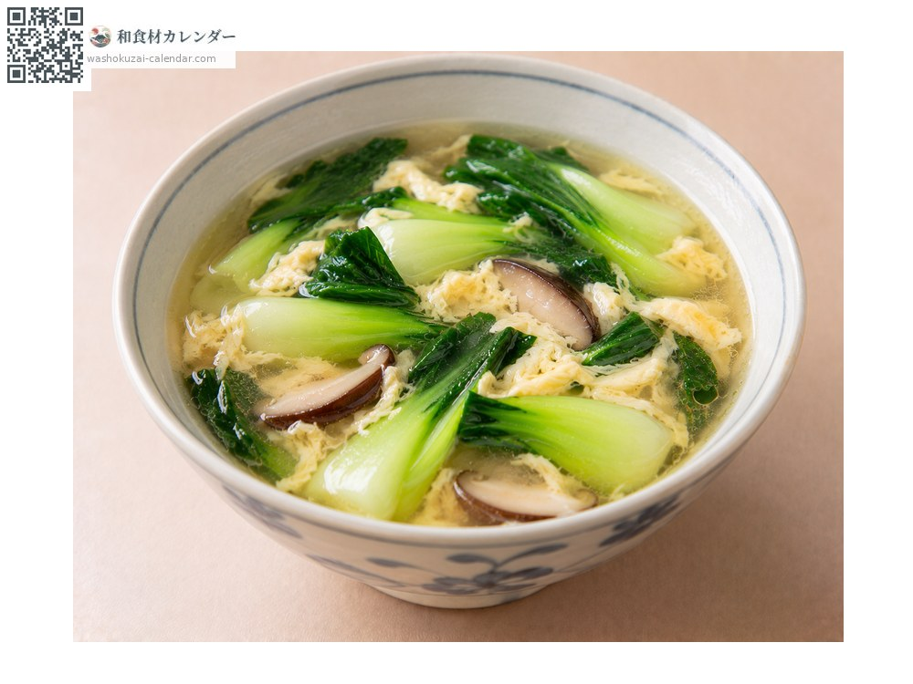

Vegetables
Bok choy
チンゲン菜 ちんげんさい chingensai
Also known aschingensai
At its best in Sep, Oct

When it is at its best
Jan
Feb
Mar
Apr
May
Jun
Jul
Aug
Sep
Oct
Nov
Dec
In seasonAvailable
How to cook

Stir-fried
Cooked quickly over high heat, stems going in first.

In cream sauce
Simmered in milk, where the leaf and stem textures play against each other.

Ohitashi
Blanched briefly and steeped in dashi.

Soup
In a Chinese-style soup, where it holds its shape.
How to choose
Deep green leaves with thick white stems and a plump base.
Storage
Wrap in damp paper and refrigerate standing upright. Use within three or four days.
Main areas
Good to know
It came from China around the normalisation of relations and spread in Japan from the 1970s, making it a relatively new vegetable here. It has no bitterness and needs no parboiling. The stems take longer to cook, so put them in the pan first.